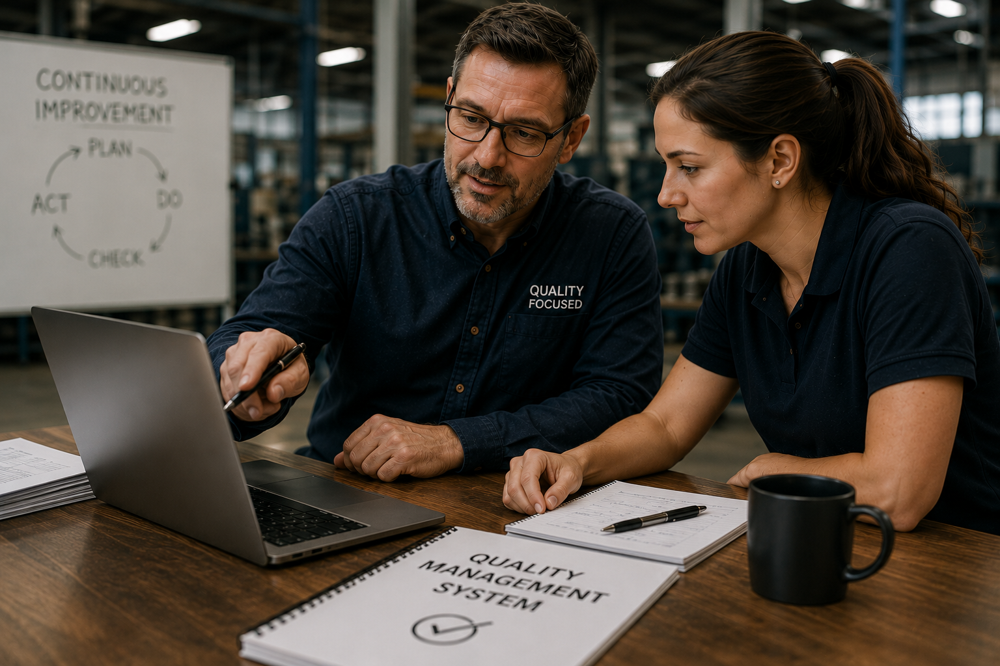
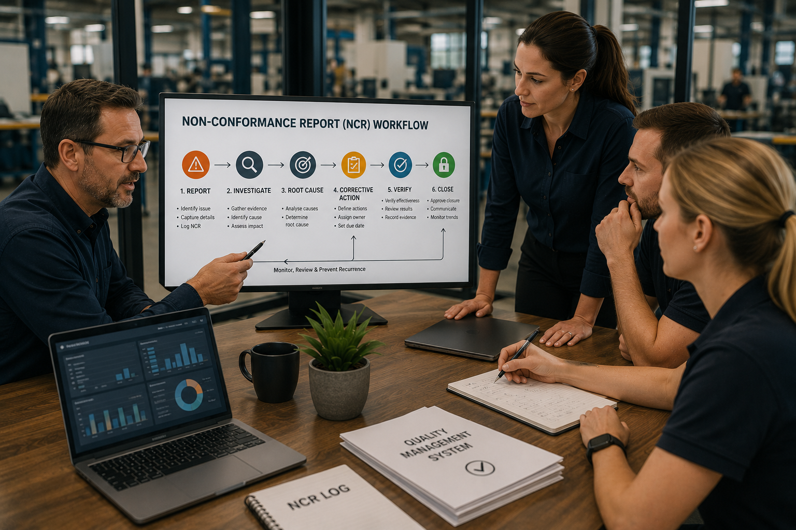
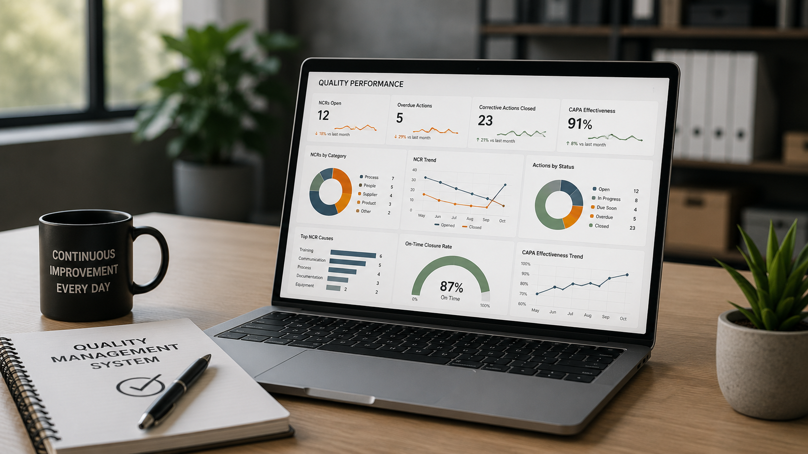
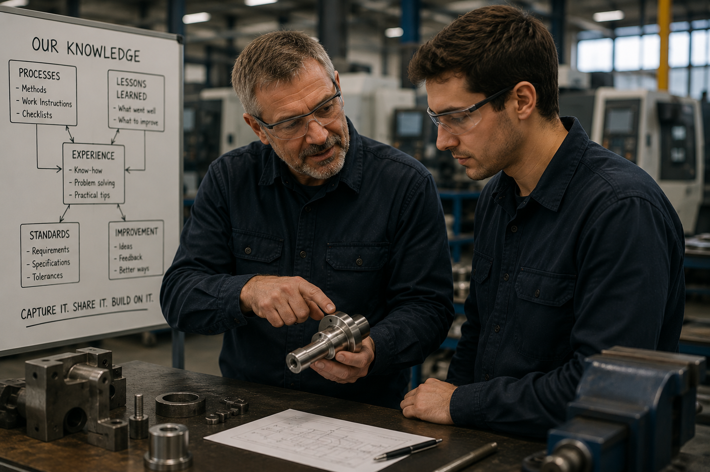

FUSED ID
FUSED ID
Use the Transition to Improve the Business, Not Just Update Documents
ISO 9001 is expected to be updated in 2026, with certified organisations likely to have a transition period to update their quality management systems.
For many businesses, this will be the first major review of their quality system in years. The opportunity is not just compliance. It is a chance to modernise how quality, knowledge, corrective actions and improvement are managed.
Review
Identify manual processes, duplicated work, inconsistent records and workflows that are difficult to monitor.
Modernise
Use the transition to improve how non-conformance reports, investigations, corrective actions and evidence are managed.
Embed AI
Find repeatable workflows where AI can assist with documentation, analysis, reporting, routing and follow-up.
Improve
Build a quality system that is easier to use, easier to monitor and better aligned to how the business operates.
Quality Systems Were Built For This
Quality-focused organisations already understand process ownership, risk management, documented knowledge, monitoring, measurement and continual improvement.
Those same disciplines are now required for AI. The businesses that benefit most will not simply add AI tools. They will build AI into their management systems with ownership, controls and clear improvement pathways.
The shift
Traditional quality systems manage people, processes and risk.
The next generation of quality systems will also need to manage AI, automation, organisational knowledge and digital workflows.
Process Control
AI workflows need clear inputs, ownership, review points and defined outputs.
Risk-Based Thinking
AI creates opportunity, but it also introduces risks that need governance and control.
Organisational Knowledge
AI can help capture, retrieve and apply knowledge that too often lives inside individual people.
Continual Improvement
AI-supported systems can identify trends, track actions and surface opportunities to improve.

AI May Be Smart. It Is Not Wise.
AI can analyse information, identify patterns and automate repetitive tasks. But it does not understand your customers, your standards, your risks, or the judgement required when work does not follow the script.
Wisdom comes from experience. And capability only compounds when it is aligned to the company vision.
That is why successful AI deployments require more than technical expertise. They require operational expertise.
Quality-Aware AI Deployments, Built By Operators
Most AI deployments are designed by software developers and IT specialists. FUSED ID deployments are shaped by experienced business operators who understand quality management, root-cause analysis, corrective actions, governance, process ownership and continuous improvement.
We understand the work itself. That matters because AI should be embedded into business processes, not bolted onto the side of them.
Experienced Operators
We understand what good looks like inside real business functions.
Practical AI
We focus on workflows that reduce manual work and improve consistency.
Governed Execution
We build with ownership, review points, escalation paths and human judgement in mind.
Making The Right Way The Easy Way
Non-conformance reports are a perfect example of where quality systems often break down. In many businesses, NCRs are opened late, completed inconsistently, closed without proper root-cause analysis, and rarely reviewed for repeat patterns.
FUSED ID helps build AI-supported workflows that make the correct process easier to follow: capturing the issue, guiding the investigation, documenting evidence, supporting root-cause analysis, assigning corrective actions, tracking closure, and identifying repeat issues over time.
The goal is not more administration. The goal is better control.
We help quality-focused businesses make the right way to do something the easy way to do it.

Typical AI Opportunities Within Quality Systems
These are examples of where AI can support quality-focused businesses today. The right deployment depends on your processes, risks, tools and operating rhythm.
NCR & CAPA Management
AI-supported capture, investigation, corrective action tracking and closure workflows.
Root-Cause Analysis
Guided investigations, repeated issue detection and better documentation of corrective actions.
Audit Preparation
Evidence gathering, document support, audit trails and readiness checks.
Organisational Knowledge
Searchable procedures, lessons learned, quality standards and staff Q&A.
Management Reviews
KPI summaries, trend analysis, overdue action reporting and management pack preparation.
Continuous Improvement
Improvement opportunity capture, action tracking, impact calculation and trend visibility.

AI Requires Management, Not Just Implementation
Quality systems already manage risk, competency, training, documentation, corrective actions and continual improvement. AI requires the same discipline.
Unmanaged AI creates risk. Managed AI creates capability.
- AI ownership and accountability
- Use-case and risk assessment
- Monitoring and review processes
- Human approval and escalation points
- Performance measurement and improvement
Capturing Organisational Knowledge Before It Walks Out The Door
Experienced people carry a huge amount of business knowledge: why things are done a certain way, what usually goes wrong, which customers need special care, and which issues are likely to repeat.
FUSED ID helps businesses capture, structure and make that knowledge easier to find, share and apply. This supports onboarding, decision-making, training, quality control and continuous improvement.
Stronger knowledge. Better decisions. Better outcomes.

Building AI Into Existing Microsoft Platforms
Most quality-focused businesses already own many of the tools needed to start. Where practical, FUSED ID builds inside familiar platforms so your team can understand, manage and improve the system over time.
SharePoint
Procedures, forms, evidence, controlled documents and organisational knowledge.
Teams & Outlook
Notifications, approvals, reminders, escalation points and communication workflows.
Power Automate
Process automation, handovers, task creation and repeatable workflow execution.
Power BI & Dynamics
Dashboards, reporting, CRM data, operational visibility and management review support.
How A Quality AI Deployment Could Start
You do not need to transform everything at once. The strongest deployments usually begin with one focused workflow where repeatable effort, quality risk and management visibility intersect.
Map The Workflow
We identify how the process currently works, where it breaks down, who owns each step and what good looks like.
Identify AI Leverage
We identify where AI can assist with classification, research, documentation, analysis, routing, reporting or follow-up.
Build Governance In
We define human review points, approval requirements, escalation paths, monitoring and performance measures.
Deploy, Monitor and Improve
We help launch the workflow, review its performance, refine outputs and improve the system over time.
The Future Of Quality Management
Historically, businesses learned how to manage people, processes and risk. Tomorrow’s quality-focused businesses must also learn how to manage AI.
The organisations that succeed will not be those with the most AI. They will be those with the strongest systems, governance and leadership.
FUSED ID helps quality-focused businesses build AI into the way they operate.
Discuss Your Quality System & AI Strategy →Best-fit organisations
- Manufacturers and fabricators
- Engineering and technical businesses
- Construction and project-based businesses
- ISO-certified or quality-focused SMEs
- Businesses with NCRs, CAPAs, audits or compliance workflows
- Teams already using Microsoft 365